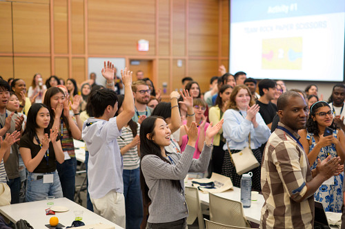

How Do I Prepare for Behavioral Interviews?
Are you stressed about the interview process? Nervous about rambling during your behavioral interviews? Read some of the most common behavioral interview questions below and practice the STAR method!
Answering Behavioral Questions
The question, “Tell me about yourself” might be asked to you multiple times throughout an interview process. When you meet with different people in the organization, they will want to know your story!
The best way to feel confident about answering this question is to prepare for a passionate, concise answer.
Follow these guidelines to craft your answer to this question:
1. Keep it Professional
Provide a brief overview of past work and educational experiences that led you to where you are now. Convey story of passion for the field/industry/organization!
2. Keep it Relevant
Provide a few relevant points that directly tie to the position and how you are qualified for it Specific past work experience, specific skills and strengths that would be valuable to the position/organization.
3. Keep it Concise
No more than 1 to 2 minutes!
Practicing the STAR Method
The STAR method is a structured approach for answering behavioral interview questions by clearly explaining a past experience. STAR stands for Situation, Task, Action, and Result. Using the STAR method helps you provide organized, concrete examples that demonstrate your skills and impact to employers.
S: Situation
Set the scene by describing the background or context of your chosen story.
T: Task
Explain the goals or primary responsibility you were facing in your story.
A: Action
Describe the set of steps you took to resolve the issue. Be sure to focus on your skills.
R: Result
Share the outcome of your chosen story and explain what you learned through this experience.
Interview Confidence Booster!
We understand that interviews can be very stressful. Take a look at these tips and tricks to help boost your self-confidence and crush your interviews.
Preparation builds confidence.
Review the job description, research the company, and prepare a few examples of your experiences ahead of time.
You don’t have to memorize answers.
Focus on key stories from your experience and structure them clearly using the STAR method.
It’s okay to pause and think.
Taking a moment before answering shows thoughtfulness and helps you give a clearer response.
Interviewers want you to succeed.
Most interviewers are hoping you’ll be a great fit—they’re not trying to trick you.
You can bring notes.
Having a few bullet points about the role, company, or your questions is completely acceptable.
Nerves are normal.
Even experienced professionals feel nervous during interviews. A little adrenaline can help you stay alert and engaged.
You’re interviewing them too.
Use the interview to learn about the team, culture, and whether the role aligns with your goals.
One interview doesn’t define you.
Every interview is practice and an opportunity to improve for the next one.
